HEATING CIRCUIT
Power for the pad
The ESP-32D controls a transistor switch to turn the separate 12V heating-pad circuit on and off.
EMBEDDED SYSTEMS / HUMAN-CENTERED DESIGN
Individual Engineering Case Study
A warm, sunny spot
for every vet trip.
I led the circuit build and wrote the microcontroller code for a temperature-controlled carrier concept, bringing together resistive heating, embedded control, and Bluetooth connectivity.
Explore the designSpecifications above are design targets. Measured weight: 7 lb. Two heating trials are documented below; these do not establish animal-use safety.
THE STARTING POINT
Getting a cat into a carrier can turn a routine vet visit into a stressful experience for both the cat and its owner. An unfamiliar, uncomfortable carrier makes the trip harder before it even begins.
Our inspiration was a grumpy cat with a clear preference: warm, sunny spots. For GEEN 1400, my team, APEX, explored how to bring that sense of warmth into a portable carrier while managing the risk of overheating.
Who I designed for
Cat owners preparing for trips, and the cats riding with them.
FROM SENSOR TO SYSTEM
The final iteration paired a heated pad with embedded temperature control and a Bluetooth interface.
In V2, an ESP-32D controls the heating pad and pairs with a Bluetooth app. The owner can toggle the heater, adjust the setpoint, and read the temperature in a user-friendly interface alongside the local LCD readout. App control replaces the earlier potentiometer dial.
HEATING CIRCUIT
The ESP-32D controls a transistor switch to turn the separate 12V heating-pad circuit on and off.
CONTROL CIRCUIT
The 5V supply circuit powers the control electronics: LCD, temperature sensor, and ESP-32D through its appropriate board input/regulation.
Each prototype added a focused layer of functionality.
An Arduino UNO read the temperature sensor and displayed its output on an LCD, establishing the basic sensing and display path.
Arduino UNO · sensor · LCDAn Arduino Nano controlled the separately powered heating pad. An LCD backpack simplified the display wiring, and a potentiometer adjusted the temperature for heater cycling.
Arduino Nano · switch · physical dialI moved the embedded control to an ESP-32D. A Bluetooth app replaced the dial while the dual 12V/5V setup supported heating, monitoring, and the LCD.
ESP-32D · Bluetooth · dual supplyBENCH TEST NOTES
I recorded the starting temperature, time to reach 105°F, and the peak temperature reached before cooling in each heating trial.
| Trial | Start | End | Time to end | Peak before cooling |
|---|---|---|---|---|
| 1 | 67.8°F | 105°F | 10 min | 107°F |
| 2 | 76.2°F | 105°F | 8 min 54 sec | 106.8°F |
What the results show: Both trials reached 105°F. The trial with the warmer starting temperature reached that point 1 min 6 sec sooner. At a measured 7 lb, the prototype reached the 7 lb threshold but did not meet the strict <7 lb portability target.
The peak readings were 2°F and 1.8°F above the recorded 105°F endpoint. These readings alone do not verify ±2°F consistency or the 120°F safety shut-off. My notes do not include sensor placement, ambient conditions, or a full temperature trace.
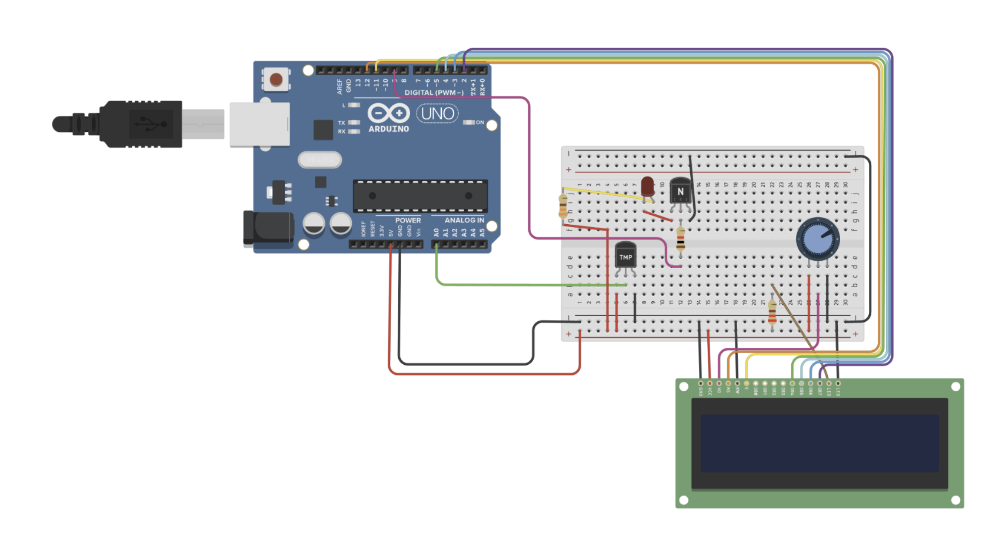
FROM BENCH TO CARRIER
These project photos show the carrier assembly, control enclosure, and circuit development. The illustration above remains a design concept; the photos below document the prototype.

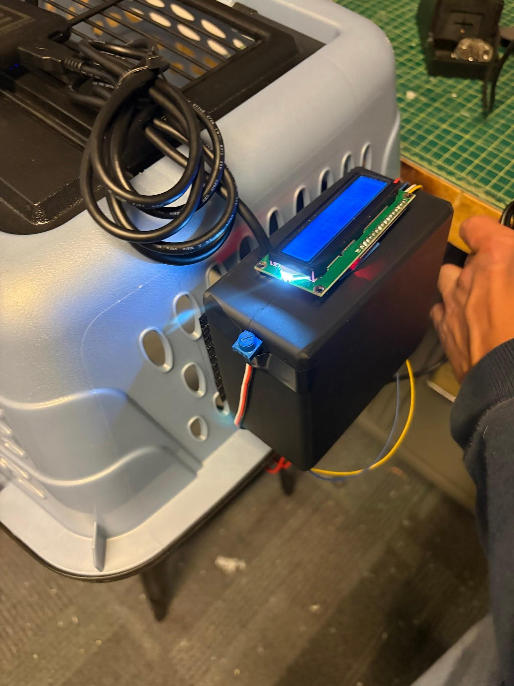
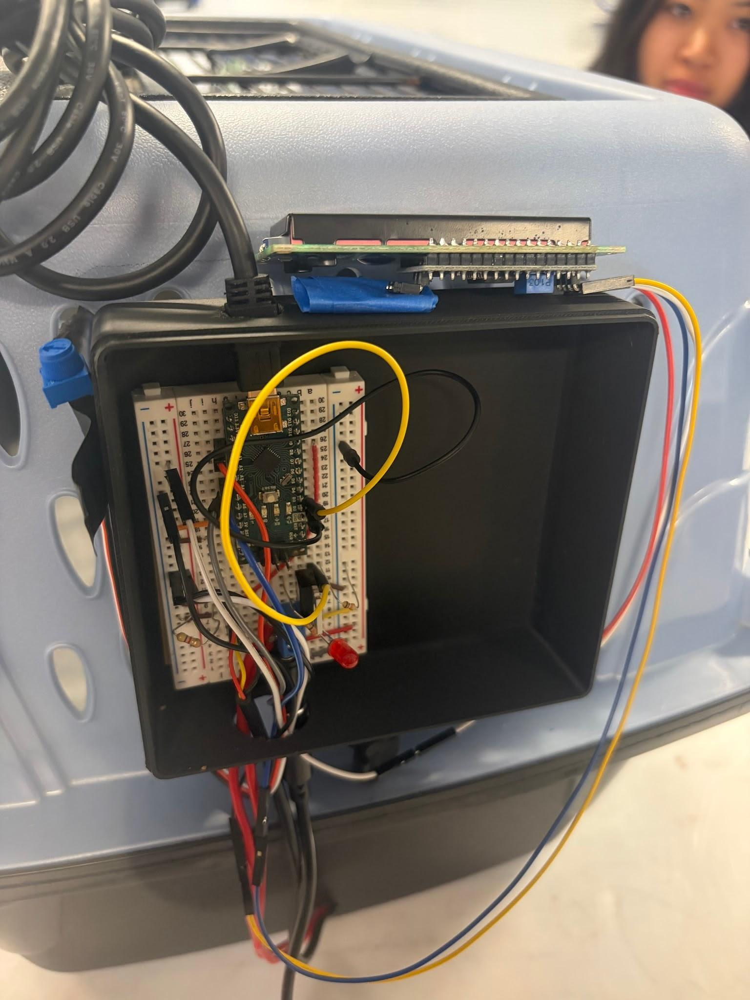
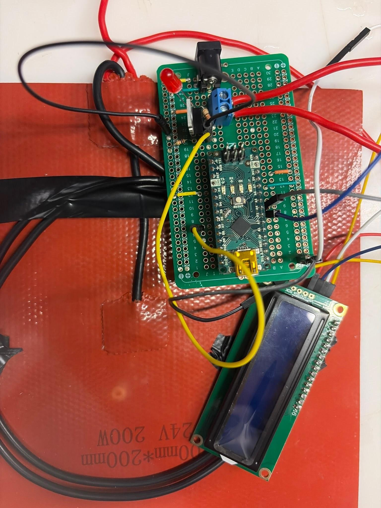
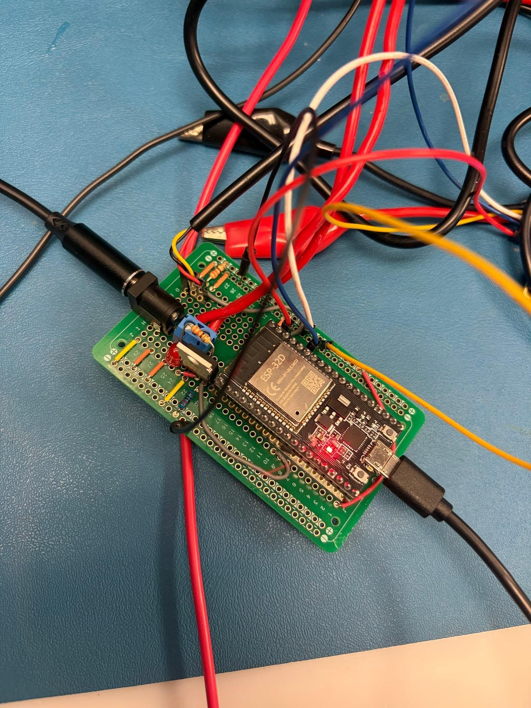
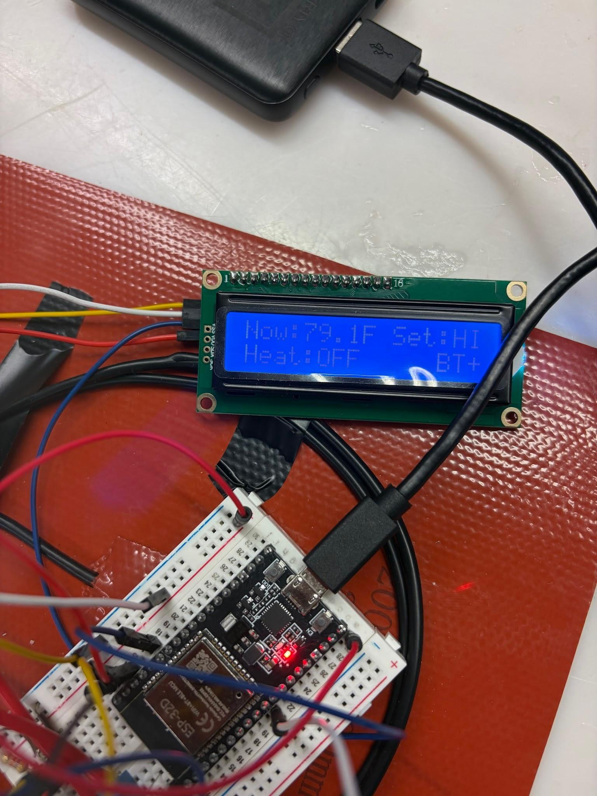
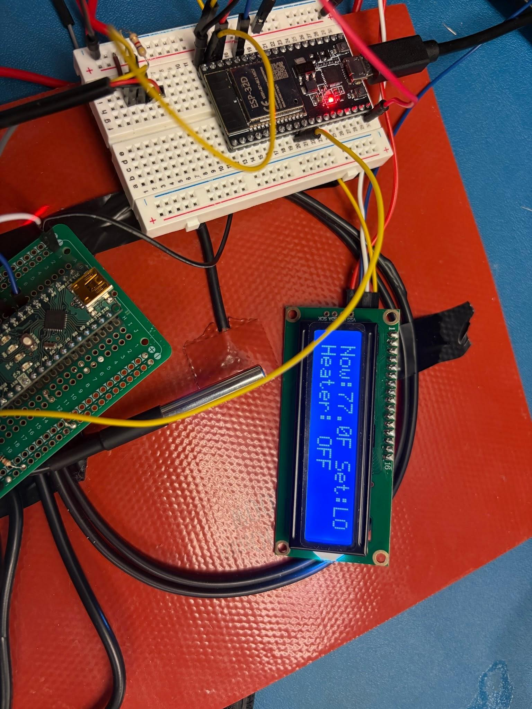
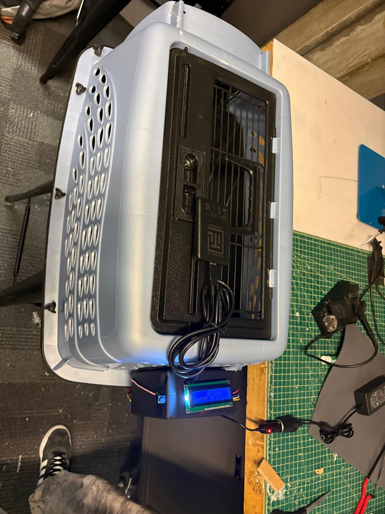
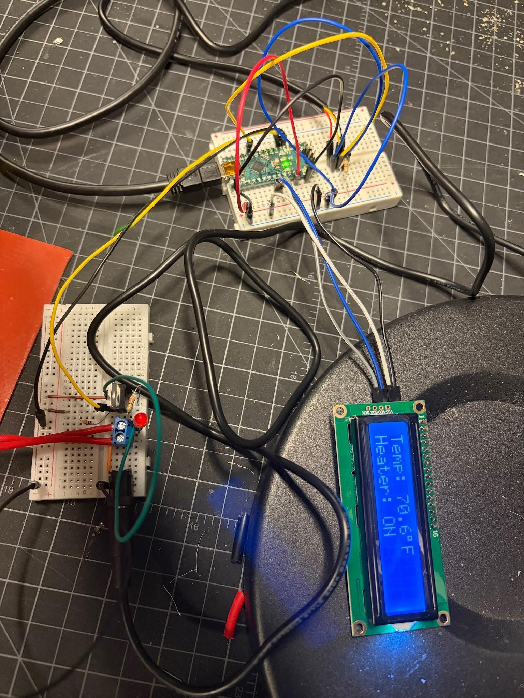
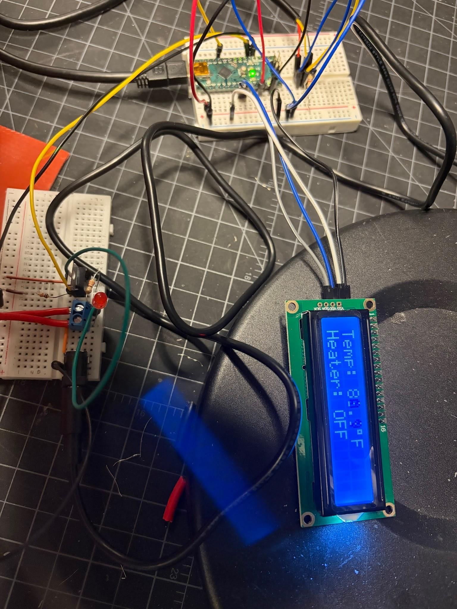
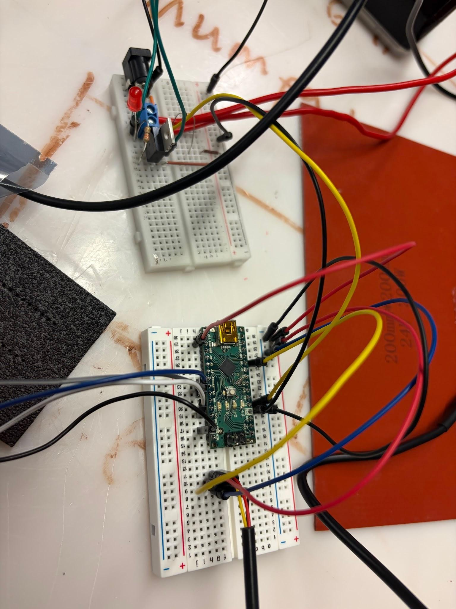
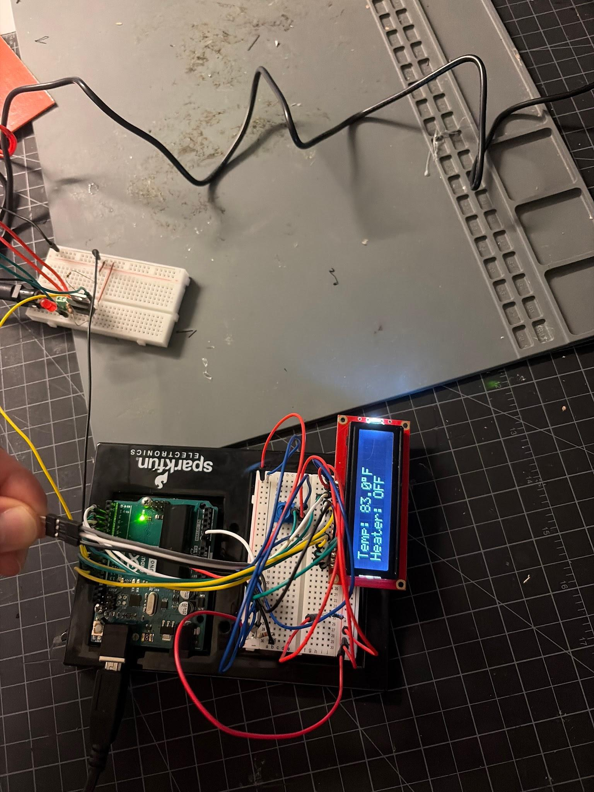
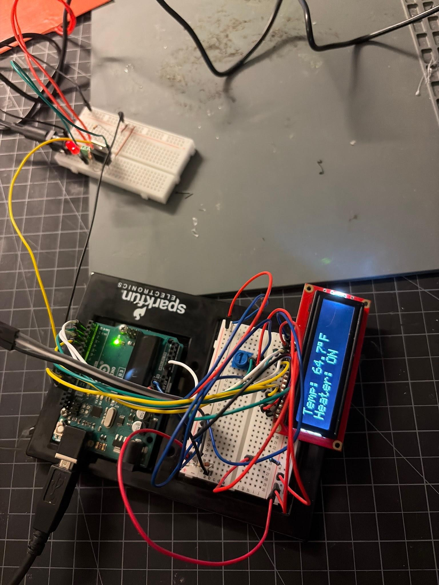
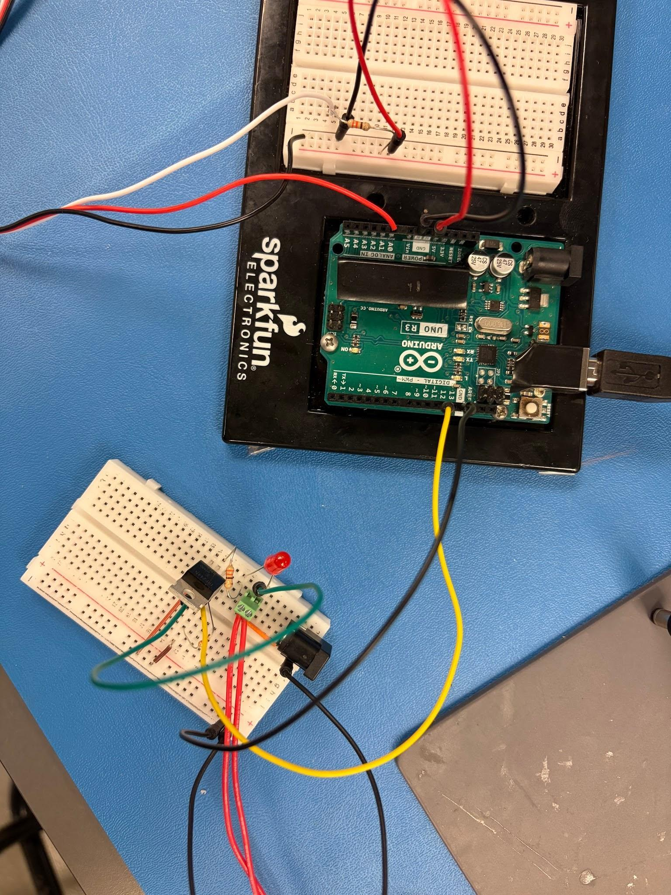
MY OWNERSHIP & DEVELOPMENT
I led the circuit build and completed almost all of the wiring and assembly myself across the iterations. I sought targeted help from TAs on the transistor switch used to turn the heat on and off.
I developed the microcontroller code myself. A teammate developed the companion app using AI-assisted coding; my contribution centered on the embedded controller and physical circuit.
HOW I APPROACHED THE WORK
I built up from temperature sensing and display to heater switching, then wireless control.
I tested components individually to separate sensor, display, and switching issues before debugging the complete system.
I kept heat transfer and resistive heating, P = I²R, in mind when considering the pad’s power demand and the carrier’s thermal response.
Moving from Arduino to ESP-32D grew my confidence in adapting microcontroller code as the interface and system requirements changed.
Working with two supply voltages and a transistor switch taught me to track power paths, board requirements, and control connections deliberately.
Component-level checks made problems easier to locate. Asking TAs a focused question helped me move through the switching challenge.
A working interface is only part of a working product. Clear ownership, careful wiring, and measured thermal performance all matter.